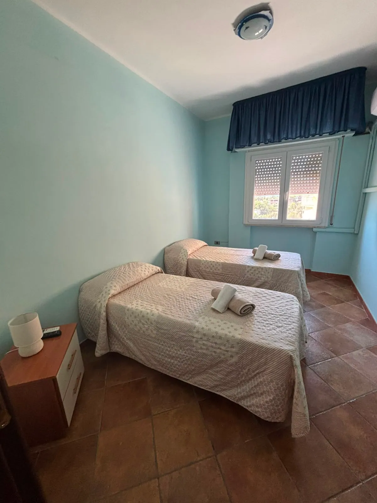
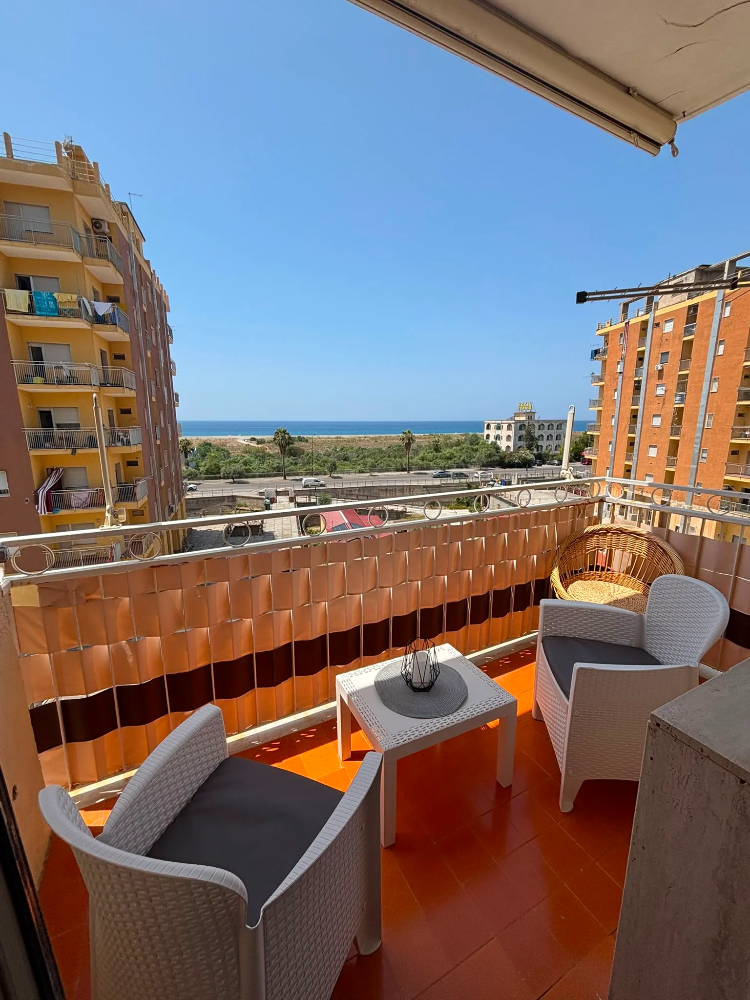
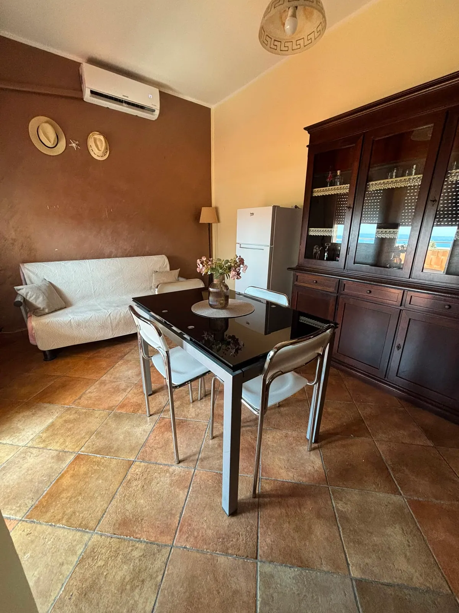
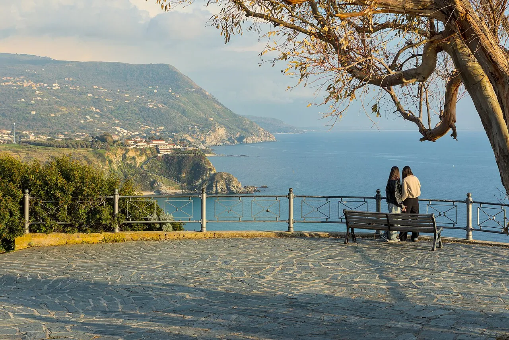
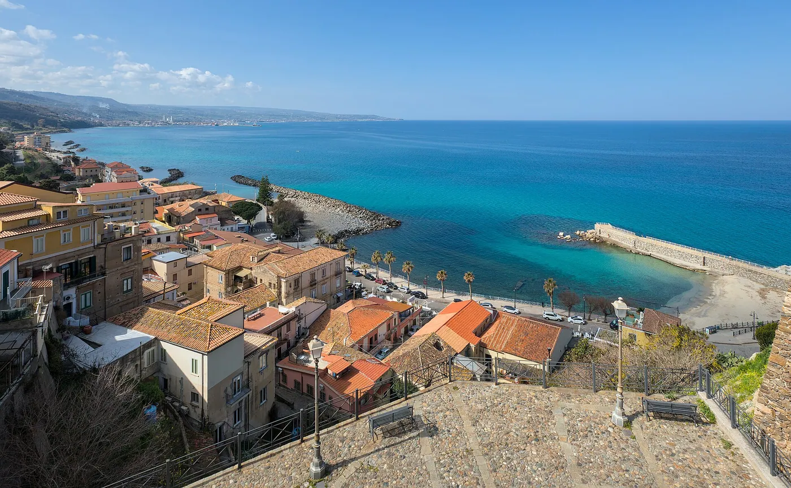
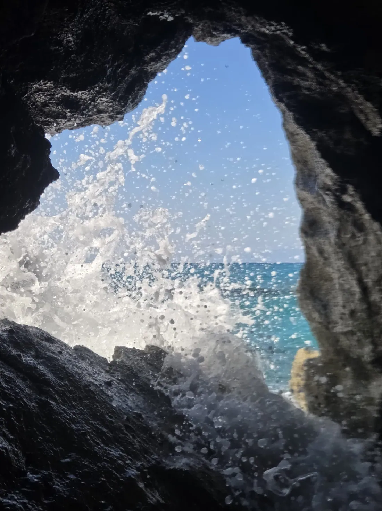
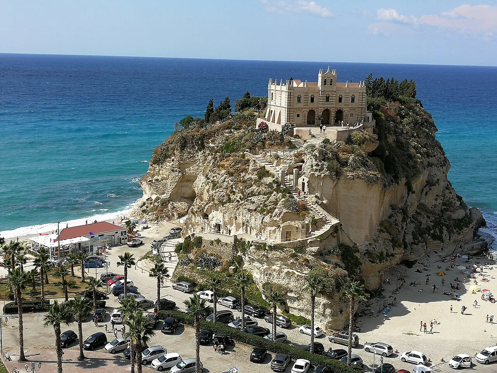

Falerna Marina · Riviera dei Tramonti
La plage, les promenades en bord de mer et la lumière du soir qui a donné son nom à la Riviera dei Tramonti.
Ouvrir dans Google Maps↗
Falerna Marina · Calabre
Un appartement paisible, pensé pour de douces journées dans le Sud.
Découvrir le lieuChambre à deux lits
Rythme italien
KS Rent est une invitation à respirer à Falerna Marina. Des intérieurs lumineux, un balcon et une vue sur la côte composent un pied-à-terre simple pour profiter de la plage, découvrir la Calabre et vraiment se reposer.
Voir la galerie

Votre séjour
L’appartement comprend la climatisation, deux chambres — l’une avec un lit double et l’autre avec deux lits simples — ainsi qu’un espace salon-repas, une cuisine compacte, une salle de bains avec douche et lave-linge et un balcon.
Nous confirmerons les détails des équipements et les conditions du séjour lors de votre demande.
Voir les disponibilitésDisponibilités
Choisissez vos dates et envoyez une demande. La période n’est bloquée qu’après acceptation par le propriétaire.
Votre demande est envoyée au propriétaire. Les demandes en attente ne bloquent pas le calendrier — seule leur acceptation réserve les dates.
Demande de séjour
Choisissez vos datesL’envoi d’une demande ne confirme pas le séjour. Les dates ne sont bloquées qu’après acceptation par le propriétaire.
Galerie
Des intérieurs lumineux, des détails simples et une vue qui reste en mémoire.
Falerna Marina
Falerna Marina est un point de départ paisible pour découvrir la côte tyrrhénienne. Commencez par la plage et le coucher de soleil, puis choisissez Pizzo, Tropea ou Capo Vaticano pour une excursion à la journée.
Nous communiquons l’adresse exacte et l’itinéraire après confirmation du séjour.





La plage, les promenades en bord de mer et la lumière du soir qui a donné son nom à la Riviera dei Tramonti.
Ouvrir dans Google Maps↗Une tour de guet historique et une belle destination pour une courte promenade ou un coucher de soleil.
Ouvrir dans Google Maps↗Un littoral ouvert, les lagunes de La Vota et de grands espaces appréciés des amateurs de vent et de sports nautiques.
Ouvrir dans Google Maps↗Un bourg marin avec le Castello Murat, l’église de Piedigrotta creusée dans la roche et le célèbre tartufo di Pizzo.
Ouvrir dans Google Maps↗Des ruelles historiques, des terrasses sur la mer et Santa Maria dell’Isola sur son promontoire rocheux.
Ouvrir dans Google Maps↗Des belvédères, des criques lumineuses et les eaux cristallines de la Costa degli Dei — une belle excursion à la journée.
Ouvrir dans Google Maps↗Une excursion dans les îles Éoliennes nécessite de vérifier à l’avance l’opérateur, la météo et les horaires des traversées.
Ouvrir dans Google Maps↗KS Rent
Choisissez vos dates et dites-nous ce dont vous avez besoin — nous vous répondrons avec les disponibilités.